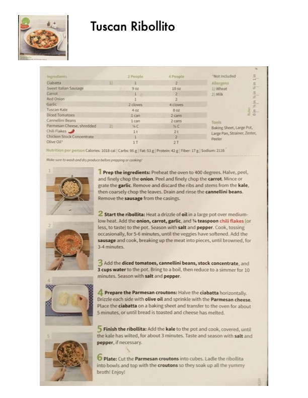

Tuscan Ribollita

Original cookbook page 240
A hearty Tuscan bread soup with Italian sausage, kale, cannellini beans, and Parmesan croutons.
Prep: 15 minutes • Cook: 25 minutes • Total: 40 minutes
Ingredients
- 1-2 Ciabatta (depending on serving size)
- 9-18 oz Sweet Italian Sausage
- 1-2 Carrot
- 1-2 Red Onion
- 2-4 cloves Garlic
- 4-8 oz Tuscan Kale
- 1-2 cans Diced Tomatoes
- 1-2 cans Cannellini Beans
- ¼-½ cup Parmesan Cheese, shredded
- 1-2 teaspoons Chili Flakes
- 1-2 Chicken Stock Concentrate cubes
- 1-2 tablespoons Olive Oil
Instructions
- Preheat the oven to 400 degrees. Halve, peel, and finely chop the onion. Peel and finely chop the carrot. Mince or grate the garlic. Remove and discard the ribs and stems from the kale, then coarsely chop the leaves. Drain and rinse the cannellini beans. Remove the sausage from the casings.
- Heat a drizzle of oil in a large pot over medium-low heat. Add the onion, carrot, garlic, and ¼ teaspoon chili flakes (or less, to taste) to the pot. Season with salt and pepper. Cook, tossing occasionally, for 5-6 minutes, until the veggies have softened. Add the sausage and cook, breaking up the meat into pieces, until browned, for 3-4 minutes.
- Add the diced tomatoes, cannellini beans, stock concentrate, and 3 cups water to the pot. Bring to a boil, then reduce to a simmer for 10 minutes. Season with salt and pepper.
- Halve the ciabatta horizontally. Drizzle each side with olive oil and sprinkle with the Parmesan cheese. Place the ciabatta on a baking sheet and transfer to the oven for about 5 minutes, or until bread is toasted and cheese has melted.
- Add the kale to the pot and cook, covered, until the kale has wilted, for about 3 minutes. Taste and season with salt and pepper, if necessary.
- Cut the Parmesan croutons into cubes. Ladle the ribollita into bowls and top with the croutons so they soak up all the yummy broth! Enjoy!
Recipe #240 from collection